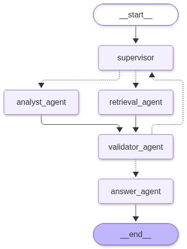

Capstone Project Module 3 — chatbot rekomendasi film dengan multi-agent RAG. Repo: ipul122/Cp3_anwar · Stack: Python 3.13, LangGraph, LangChain, Qdrant Cloud, Langfuse, Streamlit, SQLite.
Aplikasi menjawab pertanyaan seputar 1000 film IMDb dan memberi rekomendasi personal. Tiga sumber data:
SQLite (data film + hasil PCA 2D), Qdrant Cloud (vektor embedding 1536-d, payload hanya
sqlite_id), dan Langfuse (3 prompt + observability).
Alur besar: pertanyaan user → dicek guardrail → supervisor memilih satu langkah
(retrieve / analytics / recommend / lookup /
answer) → node itu menjalankan tool → kembali ke supervisor → answer
menulis jawaban final dari konteks yang terkumpul.
| LLM | LLM_MODEL via OpenRouter (chat, tool-calling, dan SQL) |
| Embedding | openai/text-embedding-3-small (1536 dimensi) via OpenRouter |
| Reranker | Rerank_MODEL via endpoint /api/v1/rerank |
| Vector DB | Qdrant Cloud, collection imdb_movies (1000 vektor, cosine) |
| Prompt & tracing | Langfuse (SDK v5, OpenTelemetry), prompt label production |
| Ukuran kode | app.py 391 · workflow.py 330 · data.py 182 · vectorstore.py 85 · config.py 61 · tools.py 58 · prompts.py 35 baris |
| Konstanta penting | K_RECO 5 · K_RANDOM 3 · RECENT_RATINGS 7 · PUSH_AWAY 0.5 · MAX_STEPS 6 · MAX_CARDS 10 · LIMIT_USD 0.001 |
Pola supervisor as tools: supervisor memilih satu route, node route mengembalikan
hasil ke supervisor, lalu supervisor memutuskan langkah berikutnya atau lanjut ke answer.
| Node | Peran | Tool |
|---|---|---|
supervisor | Menentukan route berikutnya memakai prompt imdb-supervisor + structured output (Decision). | — |
retrieve | Pencarian semantik: embedding query → Qdrant → SQLite → reranker. | search_movies |
analytics | Pertanyaan angka: LLM menyusun SQL, dijalankan read-only; kalau hasilnya daftar film, filmnya dikirim ke UI. | movie_stats |
recommend | Rekomendasi personal dari rating user dengan kedekatan PCA. | pca_recommend |
lookup | Ambil film dari judul yang disebut user/riwayat (mis. "tampilkan film ini", "mana linknya").
Alurnya RAG: judul → cocok judul di SQLite, lalu bila hasilnya < LOOKUP_MIN = 5
dilengkapi embedding → Qdrant → SQLite. | find_movies_by_title + search_movies |
answer | Menulis jawaban final dari konteks (prompt imdb-answer-agent). | — |

Diagram dihasilkan dari kode oleh view_graph.py
(GRAPH.get_graph().draw_mermaid_png()), jadi selalu sama dengan graph yang dijalankan.
workflow.State)| Field | Isi |
|---|---|
question | pertanyaan user saat ini |
history | chat history, dipakai 6 pesan terakhir = 3 percakapan |
ratings | {id_film: skor 1-10} berurutan sesuai kapan dirating |
context | catatan hasil tool + profil rating user (diisi di awal run()) |
route, query | keputusan supervisor dan query untuk tool |
visited | route yang sudah dipakai — guard anti berputar-putar |
movies | film turn ini (maks MAX_CARDS = 10) untuk card + poster di UI |
trace | log interaktif + akumulasi token & biaya untuk panel kiri |
app.py → ask()) memanggil workflow.run(question, chat, ratings, trace)
sambil menampilkan spinner "Agent sedang memproses..."._rating_note() — memuat
seluruh film yang pernah dirating (urut dari paling lama), jadi pertanyaan soal
selera/profil dijawab utuh, termasuk film animasi atau film lama yang sudah dirating._guardrail_hit()): pola jailbreak atau di luar topik film ditolak
sebelum LLM dipanggil — 0 token terpakai (event warn + span guardrail).propagate_attributes(session_id, tags) supaya semua
span satu percakapan terkelompok di Langfuse.Decision: route,
query, reason). Guard: route yang sudah dipakai dialihkan ke answer,
MAX_STEPS = 6 membatasi langkah.context, dan (kalau ada) mengisi
movies supaya UI menampilkan poster, lalu kembali ke supervisor.context + history + pertanyaan, lalu dikirim ke UI.generation (model, token, biaya),
tiap node menjadi span sendiri, dan flush() dipanggil di akhir.user | mana linknya llm | name=supervisor tokens=628 route | agent=supervisor route=lookup reason="user minta link film yang sudah disebut" tool | agent=lookup-agent name=find_movies_by_title detail="Tumbbad, Get Out, ..." tool_result | agent=lookup-agent name=find_movies_by_title detail="5 film" llm | name=answer tokens=1127 final | jawaban + 5 card dikirim -> jawaban: Tumbbad: https://www.imdb.com/find/?q=Tumbbad+2018 Get Out: ...
user | rekomendasi film horror rating tertinggi urutkan dari yang terbaru
route | agent=supervisor route=analytics
tool | agent=analytics-agent name=movie_stats
tool_result | {"sql": "SELECT Series_Title, IMDB_Rating, Released_Year_numeric, id ...",
"catatan": "ditampilkan 10 dari 32 baris"}
final | jawaban + 10 card film di panel kanan
| Path | Kegunaan |
|---|---|
app.py | UI Streamlit 5 panel: log + token/biaya, chatbot, card rekomendasi, card acak, visualisasi PCA, daftar rating. |
src/imdb_anwar/config.py | Baca .env, path database (DB_URI read-only), nama prompt, factory client llm()/embeddings()/qdrant()/langfuse(). |
src/imdb_anwar/data.py | Akses SQLite: film, film acak, cari judul, titik selera, tetangga PCA, titik scatter, konteks LLM, link IMDb. |
src/imdb_anwar/vectorstore.py | RAG: embed(), search_ids() (Qdrant), rerank() (reranker + cadangan LLM), search(). |
src/imdb_anwar/tools.py | Tool LangChain: search_movies, find_movies_by_title, movie_stats (text-to-SQL read-only). |
src/imdb_anwar/prompts.py | Ambil prompt dari Langfuse + isi variabelnya. Tidak ada teks prompt di kode. |
src/imdb_anwar/workflow.py | Graph LangGraph: node, state, guardrail, tracing, token/biaya, run(). |
check.py | 6 self-test tanpa panggilan LLM. |
eval_pca.py | Mengukur kualitas rekomendasi PCA (genre agreement, RMSE, variance). |
fix_posters.py | Perbaiki kolom Poster_Link di database dari CSV asli. |
sync_prompts.py | Kirim 3 prompt dari README_prompt.md ke Langfuse. |
view_graph.py | Tulis graph_output/workflow.mmd + .png dari graph. |
README.md, README_prompt.md, report.html → report.pdf | Dokumentasi; report.html adalah sumber dokumen PDF ini. |
data/ | database.db, imdb_top_1000.csv, ingest.ipynb (embedding + Qdrant), staging_imdb.parquet (embedding 1536-d). |
pca/ | pca_model.ipynb + pca_model.joblib — langkah PCA 2D yang menghasilkan kolom PC1/PC2. |
config.py — satu tempat konfigurasiDB_URI = file:...?mode=ro — semua query memakai ini sehingga SQLite selalu read-only
(aman di filesystem read-only seperti Streamlit Cloud, tidak mungkin mengubah data)..env: LLM_MODEL, EMBEDDING_MODEL, Rerank_MODEL,
QDRANT_*, kredensial Langfuse; nama prompt juga bisa diubah lewat env.@lru_cache (Streamlit sering menjalankan ulang skrip).def llm(temperature=0):
return ChatOpenAI(model=LLM_MODEL, api_key=OPENROUTER_API_KEY,
base_url=OPENROUTER_BASE_URL, temperature=temperature,
max_retries=0, # retry ditangani sendiri di workflow._invoke
timeout=60) # jangan menggantung kalau provider lambat
data.py — semua yang berhubungan dengan SQLite| Fungsi | Kegunaan |
|---|---|
query(sql, params) | Jalankan SQL read-only, hasil list of dict. |
by_ids(ids) | Ambil film berdasarkan id (urutan mengikuti input). |
random_movies(limit, exclude) | Film acak (ORDER BY RANDOM()). |
imdb_url(movie) | Link IMDb (judul + tahun). Dipakai UI untuk poster/judul dan dikirim ke konteks LLM. |
by_titles(titles) | Cari film dari daftar judul: tahun dibuang, tanda baca & aksen diabaikan ("Spiderman" ketemu spider-man: into the spider-verse, "Tokyo" ketemu tôkyô goddofâzâzu), kecocokan persis diutamakan, potongan judul hanya untuk kata ≥ 4 huruf. |
rating_center(ratings) | Titik selera (lihat 4.3) — hanya dari RECENT_RATINGS = 7 rating terbaru. |
pca_neighbors(center, k, exclude) | k film terdekat dari titik selera (jarak euclidean 2D), film yang sudah dirating dibuang. |
pca_points() | Semua titik PC1, PC2 + judul + rating untuk scatter plot. |
for_llm(movies) | JSON ringkas untuk konteks LLM: id, judul, tahun, genre, sutradara, rating, link, overview dipotong 200 karakter. |
to_json(records) | JSON penuh — output tool, karena card dari chatbot butuh Poster_Link + PC1/PC2. |
schema_text() | Deskripsi tabel untuk prompt penyusun SQL. |
Ambil PC1/PC2 film yang dirating (WHERE id IN ...), lalu:
1. Ambil hanya RECENT_RATINGS = 7 rating TERBARU (urutan dict = urutan kapan dirating;
film yang dirating ulang dipindah ke paling belakang).
2. Pisah menurut rating:
disukai = rating >= 6 -> menarik centroid (bobot = nilai rating)
dibenci = rating <= 5 -> menolak centroid (bobot = 6 - rating)
3. Basis centroid = rata-rata berbobot film DISUKAI
PC1c = S(rating x PC1) / S(rating) (idem PC2)
kalau tidak ada yang disukai -> pusat katalog AVG(PC1), AVG(PC2)
4. Kalau ada yang DIBENCI, centroid digeser menjauh:
titik_dibenci = rata-rata berbobot film dibenci (bobot = 6 - rating)
push = 0.5 x S(6 - rating) / (jumlah_dibenci x 5) -> rating 5 = 0.1, rating 1 = 0.5
centroid = centroid - push x (titik_dibenci - centroid)
Jadi semua rating dipakai, tapi perannya beda: rating tinggi menarik, rating rendah menolak. Rating lama (> 7 terakhir) otomatis tidak dipakai lagi untuk titik selera, sehingga selera yang berubah cepat diikuti. Daftar "film yang dirating" di UI dan catatan rating ke agent tetap memuat semua rating, jadi pertanyaan seperti "saya ini orang yang seperti apa" dijawab dari seluruh riwayat.
vectorstore.py — jalur RAGembed(text): embedding 1536 dimensi lewat OpenRouter.search_ids(query, limit): cari di Qdrant, ambil payload["sqlite_id"]._rerank_api(): kirim 15 kandidat ke /api/v1/rerank; gagal → None._rerank_llm(): cadangan — minta LLM mengurutkan dokumen.rerank(): gabungkan; last_rerank mencatat sumber urutan
(reranker / llm-fallback / urutan-vektor) dan tampil di console log.search(): Qdrant → SQLite → reranker, mengembalikan data film lengkap.tools.py — tool yang dipanggil agentsearch_movies(query) | Pencarian semantik ke vector DB + reranker. Input deskripsi (mis. "film perang yang menyedihkan"). |
find_movies_by_title(titles) | Ambil detail film dari daftar judul (satu judul per baris). Untuk "tampilkan film ini" / "mana linknya" — tanpa embedding, cepat dan murah. |
movie_stats(question) | Text-to-SQL: LLM menyusun satu query SELECT (prompt
imdb-sql-agent), diverifikasi _is_safe_select(), dijalankan read-only, hasil
dikembalikan bersama SQL-nya supaya transparan. |
workflow.py — otak agentclass Decision(BaseModel):
route: Literal["retrieve", "analytics", "recommend", "lookup", "answer"]
query: str # deskripsi pencarian, pertanyaan statistik, atau daftar judul
reason: str # alasan singkat (maksimal 15 kata), ikut tampil di log
Supervisor memakai with_structured_output(Decision, include_raw=True): hasil terstruktur untuk
routing, dan raw untuk membaca usage_metadata + biaya OpenRouter
(response_metadata["token_usage"]["cost"]).
Guard anti-loop: route yang sudah ada di visited dialihkan ke answer;
kalau steps >= MAX_STEPS (6) juga dipaksa answer.
def _call_llm(trace, name, messages, schema=None):
model = config.llm().with_structured_output(schema, include_raw=True) if schema else config.llm()
with config.langfuse().start_as_current_observation(name=name, as_type="generation", ...):
result = _invoke(model, messages) # retry singkat 2x untuk error sementara
usage = message.usage_metadata # input/output/total token
cost = token_usage["cost"] # biaya dari OpenRouter
trace["prompt_tokens"] += ...; trace["cost"] += cost
log_event(trace, "llm", name=name, tokens=..., cost=...)
Supaya konteks tidak boros token: for_llm() memotong overview 200 karakter,
_compact_result() membatasi hasil SQL 10 baris (dengan catatan "ditampilkan 10 dari N baris"),
dan MAX_CARDS = 10 membatasi film yang dikirim ke UI. Catatan rating
(_rating_note()) memuat semua film yang dirating supaya bot bisa menjawab
pertanyaan selera secara utuh, sementara yang dipakai untuk menghitung titik selera tetap
7 rating terbaru. Pada uji pertanyaan statistik, langkah supervisor turun dari ~2000 token
menjadi ~1050 token.
| Event | Isi | Warna |
|---|---|---|
user, rating | pertanyaan user / rating film | biru |
route | agent=supervisor + route terpilih + alasan | violet |
llm | name=supervisor / answer + token + biaya | violet / hijau |
tool | agent=retrieve/analytics/recommend/lookup + nama tool + argumen | oranye |
tool_result | jumlah hasil + status reranker | abu-abu |
final | jawaban dikirim ke user | hijau |
warn, error | guardrail menolak / error provider | merah |
_guardrail_hit() memeriksa pola jailbreak ("ignore previous",
"abaikan instruksi", "system prompt", "kamu sekarang adalah", "act as", ...) dan pola di luar topik
("buatkan kode", "python code", "hello world", "script", "resep", "puisi", "terjemahkan", ...).
Kalau kena: jawaban penolakan tetap, event warn, span guardrail ke Langfuse,
dan tidak ada panggilan LLM sama sekali.Decision.blocked diisi true kalau
supervisor menilai permintaan di luar topik film walau kalimatnya tidak tertangkap pola. Node supervisor
mencatat warn agent=supervisor lalu langsung mengarahkan ke answer.Lapis 1 dan 2 sama-sama mengisi state["blocked"], dan itulah yang dipakai UI untuk
menampilkan banner jailbreak.jpg. Contoh nyata:
"coba buatkan python code hello world" → kena pola (blocked="python code",
biaya $0) · "tolong tuliskan fungsi untuk mengurutkan angka" → ditandai supervisor
(blocked="Pertanyaan di luar topik film IMDb.") ·
"rekomendasi film horor tahun 80-an" → tidak diblokir, jalan normal (retrieve → answer).
run() — satu fungsi yang dipakai UIdef run(question, history=None, ratings=None, trace=None) -> (answer, state, trace):
state.context = [_rating_note(ratings)] # agent jadi tahu rating user (7 terbaru)
with propagate_attributes(session_id=..., tags=["imdb","capstone"]):
if guardrail_kena: jawab penolakan, tanpa LLM
else: result = GRAPH.invoke(state)
config.langfuse().flush()
return answer, result, trace
Error provider ditangkap di sini: event error ditulis dan user menerima pesan ramah
("Maaf, model sedang bermasalah...") sehingga aplikasi tidak mati saat rate limit. Prompt yang belum ada
di Langfuse memunculkan PromptMissing dengan pesan jelas.
app.py — tampilan dan interaksi| Panel | Isi | Konstanta |
|---|---|---|
| Kiri atas | Token (total/in/out), Biaya USD, log interaktif berwarna | LOG_HEIGHT = 520 |
| Tengah atas | Chatbot: history, poster, rating 1-10 langsung dari jawaban, expander bukti RAG dengan label dinamis (Qdrant / tool lain / tanpa tool), spinner, banner jailbreak & banner batas biaya | CHAT_HEIGHT = 520, LIMIT_USD |
| Kanan atas | Card rekomendasi (5) + Card acak (3) yang bisa dirating | K_RECO = 5, K_RANDOM = 3, CARDS_HEIGHT = 500, RANDOM_HEIGHT = 300 |
| Kiri bawah | Visualisasi PCA: 1000 titik + titik selera + jangkauan + card acak; hover menampilkan judul | PCA_HEIGHT = 400 |
| Kanan bawah | Daftar film yang dirating user (font kecil) + hapus rating | RATED_HEIGHT = 150 |
Semua panel bertinggi tetap sehingga halaman tidak makin panjang ketika chat/rating bertambah;
yang bergulir hanya isi panelnya, dan chat memakai autoscroll.
| Banner | Kapan muncul | Efek |
|---|---|---|
data/jailbreak.jpg | Pesan TERAKHIR ditolak: state["blocked"] terisi dari
(1) pola kode atau (2) keputusan supervisor (Decision.blocked) |
Gambar tampil di akhir percakapan (bukan di awal, bukan menempel di pesan lama) + caption "Percobaan jailbreak terdeteksi" |
data/limit_token.jpg | Total biaya sesi ≥ LIMIT_USD (default 0.001 USD) |
Gambar tampil di akhir percakapan, st.chat_input(disabled=True), ask() berhenti
sebelum memanggil agent. Rating film tetap bisa. Refresh halaman = sesi baru (biaya 0) sehingga
chatbot aktif lagi. |
Pemeriksaan biaya ada di limit_reached() (baca st.session_state.trace["cost"]) sehingga
tidak ada panggilan LLM yang terbuang setelah batas tercapai.
Catatan penting soal konteks & halusinasi: prompt answer melarang menyebut
judul film yang tidak ada di konteks, prompt SQL mewajibkan menyertakan id +
Series_Title kalau user menanyakan filmnya juga, dan label expander bukti di chat
mengikuti tool yang benar-benar dipakai (Qdrant hanya kalau search_movies jalan).
Kasus nyata yang diperbaiki: pertanyaan "pendapatan genre apa + film apa 2019-2021" dulu dijawab
dengan Spider-Man: No Way Home yang tidak ada di dataset; sekarang dijawab
Avengers: Endgame (2019) dan judul yang tidak ada dikatakan terus terang tidak ada.
| Kapan | Sumber card rekomendasi | Fungsi |
|---|---|---|
| Sesi baru | acak | random_movies(K_RECO) |
| Setelah menyimpan rating | PCA 2D (7 rating terbaru) | rating_center() + pca_neighbors(k=5) |
| Jawaban chatbot menyebut film | hasil agent | state["movies"] (maks 10 film) |
| User minta link / "tampilkan film ini" | hasil lookup | find_movies_by_title() |
| Pertanyaan statistik (SQL) | hasil analytics | kolom id dari SQL → by_ids() |
Acak murni dari seluruh katalog (ORDER BY RANDOM()) dengan dua pengecualian: film yang sudah
dirating dan film yang sedang tampil sebagai rekomendasi. Karena jangkauan rekomendasi sangat sempit
(~5 film dari 1000), card acak praktis selalu berada di luar area rekomendasi — berfungsi sebagai
eksplorasi. Tombol Acak lagi untuk mengganti.
Scatter PC1 vs PC2 untuk 1000 film, kelompok warna: semua film, film yang dirating,
titik selera, rekomendasi, card acak, dan lingkaran jangkauan. Tooltip hover menampilkan judul film,
rating IMDb, PC1, PC2, dan kelompoknya.
| Nama prompt | Label | Variabel | Dipakai oleh |
|---|---|---|---|
imdb-supervisor | production | {{context}}, {{history}}, {{question}} | node supervisor |
imdb-sql-agent | production | {{schema}}, {{question}} | tool movie_stats |
imdb-answer-agent | production | {{context}}, {{question}} | node answer |
Tidak ada teks prompt di kode. prompts.py hanya mengambil prompt dari Langfuse dan mengisi
variabelnya. Prompt dikelola lewat UI Langfuse atau poetry run python sync_prompts.py
(sumber: README_prompt.md).
session_id + tag imdb,
capstone; tiap node menjadi span sendiri, tiap panggilan LLM menjadi span
generation (model, token, biaya), penolakan guardrail menjadi span guardrail.GET /api/public/traces) tidak tersedia; ingestion lewat OTel tetap jalan dan pembacaan
data memakai GET /api/public/v2/observations.eval_pca.py)| Ukuran | PCA 2D (dipakai) | Embedding penuh 1536-d | Acak / baseline |
|---|---|---|---|
| Genre sama di 5 tetangga terdekat | 0.815 | 0.945 | 0.658 |
| RMSE prediksi rating (k=10) | 0.292 | 0.266 | 0.275 |
| Hal | Kenyataan di database |
|---|---|
| Cakupan film | 1000 film IMDb Top 1000; hanya 29 film rilis 2019-2021 |
| Data pendapatan | Gross_cleaned kosong pada 13 dari 29 film 2019-2021 (jadi 16 yang bisa dipakai) |
| Kolom Genre | berisi gabungan, mis. "action, adventure, drama" → kalau mau per genre tunggal harus dipisah (LIKE / beberapa kolom) |
| Film yang tidak ada | mis. Spider-Man: No Way Home (2021) tidak ada di dataset; yang ada hanya Spider-Man: Into the Spider-Verse (2018) |
Jawaban benar untuk contoh pertanyaan: film pendapatan tertinggi 2019-2021 = Avengers: Endgame (2019) dengan $858,373,000 (genre action, adventure, drama); kalau genre dihitung per genre tunggal, urutannya drama ($1.97 M) > adventure > action > comedy.
Suka: The Dark Knight, LOTR: Return of the King, Inception = 10. Benci: Psycho.
| Rating Psycho | Jarak pusat selera ke Psycho | Arti |
|---|---|---|
| tidak dirating | 0.416 | titik selera dari film yang disukai saja |
| 8 | 0.329 | tertarik ke arah Psycho |
| 5 | 0.458 | ditolak pelan |
| 1 | 0.624 | ditolak kuat |
Efeknya ke daftar rekomendasi: dengan rating 1, tetangga terdekat bergeser ke Star Wars, The Avengers, Guardians of the Galaxy, Avatar — lebih konsisten dengan selera action/adventure.
poetry install copy .env.example .env # isi kredensial poetry run python sync_prompts.py # kirim 3 prompt ke Langfuse poetry run streamlit run app.py poetry run python check.py # 6 self-test tanpa panggilan LLM poetry run python eval_pca.py # ukur kualitas rekomendasi PCA
ipul122/Cp3_anwar, main file app.py,
Advanced settings → Python 3.13 (sesuai pyproject.toml), lalu isi Secrets dengan
seluruh isi .env. Streamlit mempromosikan secrets ke os.environ sehingga
config.py langsung membacanya..env tidak di-commit (ada di .gitignore); .env.example jadi panduan
variabel yang dibutuhkan.| Bagian | Kegunaan bagi pengguna |
|---|---|
| Chatbot + RAG | Menjawab pertanyaan film dengan data nyata dari vector DB, bukan halusinasi; bukti konteks bisa dibuka. |
Tool search_movies | Mencari film dari deskripsi bebas (tema, suasana) memakai embedding + reranker. |
Tool find_movies_by_title | Menampilkan/membuka film yang sudah disebut, termasuk memberi link IMDb. |
Tool movie_stats | Menjawab pertanyaan angka (rating tertinggi, sutradara terbanyak) lewat SQL transparan. |
Route recommend | Rekomendasi personal dari 7 rating terbaru milik pengguna. |
| Card rekomendasi & card acak | Media memberi rating: dari rekomendasi (dekat selera) maupun eksplorasi (acak). |
| Visualisasi PCA | Menjelaskan kenapa film direkomendasikan: titik selera, jangkauan, posisi card acak. |
| Console log + token/biaya | Menunjukkan alur agent/tool yang benar-benar dieksekusi beserta biayanya. |
| Guardrail | Menjaga chatbot tetap pada topik film dan tidak bisa dibajak instruksinya. |
| Langfuse | Tempat semua prompt + jejak lengkap setiap percakapan (audit & evaluasi). |
Dokumen ini dibuat dari kode pada commit terakhir repo (branch main); file sumbernya
report.html. Angka pada bagian 9 dan 10 berasal dari eval_pca.py dan pengukuran langsung
pada database 1000 film.